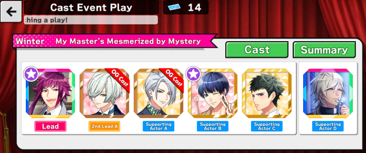
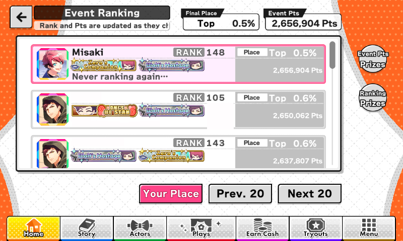

[A3! Act! Actors! Addict!] EN: In-Depth Event/F2P Guide
Event Guide
Disclaimer:
- This guide is intended for the English/Global Version of A3! and is not fully applicable to other servers.
- This guide is intended for players who have at least a basic understanding of the game (i.e. Rank 70+), who are either F2P or have limited means of obtaining gems, and are interested in tiering.
- Gameplay optimization and gem saving is focused on rather than player desires and “best boys”.
- Actor cards available to players will vary and thus individual player experiences may vary.
- Images and spoilers regarding future banners & events are kept minimal. It does not contain any Part 2 and JP-only content. Links to view spoilers are provided in the respective section.
Table of Contents
- 1. Tiers
- 2. Bonuses from Event Cards & Theater
- 3. Friend and Guest Supports
- 4. General Tips
- 5. Ranking Strategies
- 6. Rookie Mistakes, Trivia, & Other Links
Tiers
| T1 (Top 0.5%) | cutoff for 3 copies of SSR |
| T2 (Top 1.0%) | cutoff for rank badge |
| T3 (Top 2.0%) | cutoff for 2 copies of SSR |
| T4 (Top 5.0%) | cutoff for 3 copies of SR |
| T5 (Top 10.0%) | cutoff for 1 copy of SSR |
| T6 (Top 20.0%) | cutoff for 2 copies of SR |
| T7 (Top 30.0%) | |
| T8 (Top 40.0%) | cutoff for 1 copy of SR |
| T9 (Top 50.0%) | |
| T10 (Top 60.0%) | |
| T11 (Top 80.0%) | |
| T12 (Top 100.0%) |
T1 (0.5%) and T2 (1%) are very competitive and are mainly for bragging rights as they reward exclusive badges.
T3 (2%) is the minimal tier that rewards two copies of the event SSR, and is also competition-heavy.
T5 (10%) is the minimal tier that rewards one copy of the event SSR. T4 (5%) is the least competitive tier of the top five tiers because the difference between its rewards and that of T5 (10%) are minimal (10 more gems and an extra copy of the SR).
T6 (20%) is still a good tier to be in as those who have obtained the SR reward can fully bloom their SR.
Tiers below T6 are for beginners, casual players, and those uninterested in tiering.
Rank prizes are given when the event has concluded.
T1 to T4 reward an extra copy of the SR/SSR. These are just for being able to display the unbloomed artwork of the card on your profile. Otherwise, they can be used to level up lead skills (SR = SR coach card, SSR = x2 SR coach cards).
Bonuses from Event Cards (Gacha & Event Rewards)
Bonus points per card (Troupe events)
|
Bonus items per card (Seasonal events)
|
Every event card you use for a show will give additional bonus points per show.
Duplicate copies of the same card, whether bloomed or unbloomed, count for bonus points. The only disadvantage to using the same actor's card twice or more is having less actor slots for link skills.
Boosted stat of strongest attribute of regular event cards
|
Newer cards generally have higher stat totals than the initial stats. (i.e. Wedding Tsumugi and Wedding Sakyo have higher stats than a regular SSR)
Theater (Cast Event Play)
If the event has a play, event tickets (troupe tickets for troupe events) will be given from the point rewards and rarely from practice. Base points are 500 per ticket. These points are typically insignificant unless you have a high number of event cards, but every point counts.
Every event card you use gives additional bonus points per ticket. However, unlike shows each unique actor will only count once. You can’t use both the unbloomed & bloomed version of the same card for additional points. Besides that, it doesn't matter where the actors are placed (Supporting Actor D counts too).

An extra 3,500 Pts!
OPTIMIZATION:
Wait until you've obtained the event SR and/or SSR card before using all of your tickets for the maximum amount of bonus points.
If you're the forgetful type or just want to be safe, use one ticket for the 100% completion badge and save the rest of the tickets for after you have the event SR/SSR. The completion badge will not be available after the event ends.
If you have the R gacha card, watch a play with the original cast AFTER the event ends, since you can obtain the "Original cast and costumes" badge anytime.
Only bloomed event cards double as original, so you can't use the unbloomed SR/SSR rewards as original cast.
Friend and Guest Supports
- The game encourages you to use different supports throughout the day (the number 10 indicating friend points will show if you haven't used them yet), because using the same friend/guest too many times in a day makes them disappear for a while, limiting your support options.
- Who shows up on your support list also seems to be determined by time. If you can't find a specific friend or guest on your list, wait 5-10 minutes before updating again for a chance of the supports changing. But sometimes a friend/guest just won't appear no matter how many times you update.
- If you send a friend request to another player and it stays as pending, then you cannot see or use that player’s cards until the request is either accepted/deleted by the receiver or revoked by you (the sender). This is because the game doesn’t allow you to send a request again to the same player while a current request is pending. (Using a guest support prompts you to send a friend request)
- In a less popular event, it can be more difficult to find event cards.
- Friend and guest supports are limited based on the player's "friend range"; a specific range of players you can see (who can also see you) that is possibly tied to your player ID. This range is only a tiny percentage of the entire player base and likely expands as new players join. This is why many players you see in the rankings will never show up on your support list.
- THEORY: During The Stranger event, there were around 12,000 players who participated in the event, and ~1,200 players (Top 10%) who received the SSR reward. With two fully bloomed cards with max lead skills, I was receiving 110 usages on average by players daily. I would estimate the range to be about 120 active players (Top 10%) or about 1,200 including all of the inactive/casual players. Let's say the total player base is 120,000 (reasonable guess based on the number of app downloads). Then 1% of all players can see my supports.
- It may be advantageous to have friends outside of your "friend range" so that you have a larger pool of supports to choose from. You can find players outside of your range by searching for players in the "Find" section in-game (which refreshes from time to time). You can also add players off-site or have them add you from an alternate account.
- Share your gacha cards if you've pulled them to thank friends and guests who helped you! To set your supporting actors, go to Edit Team, then the Show tab. The lead actors for the first three teams (Comedy, Action, Drama) can be used by friends and guests.
General Tips
(I won't count the first few hours after maintenance as a full event day for simplicity's sake. Events last either 9 or 10 full days.)
- Do all four types of shows (Matinee, Soiree, Finale, Encore) at least once each for the 1st-time gems.
- Know how long the event will last. Some will last 10 full days, others 9 days. Events that are a day shorter can cause some players to be unable to reach their goal in time, particularly the 1.15mil SSR reward.
- The first two to three days of an event is the "Honeymoon" phase, when the event is fresh and exciting and many players will rush to get to the top. The days in the middle of the event (5, 6, 7, 8) slow down as players exhaust their gems and kame boxes. The event will pick up again on the last day, but there will be a notable amount of players who will stop trying after reaching certain milestones (particularly the 1.15mil SSR reward).
- Manage your resources carefully throughout the event. You will be showered with prizes in the first two days, but they can dry up just as quickly. Keep an eye on the upcoming kame boxes and bento you'll receive as you inch closer to reward milestones.
- Don't hoard all of your items until the very last day unless you think you can use them all quickly enough.
- There is some RNG when it comes to getting event shows. For every event practice you do, at least one event show is guaranteed to pop up at some point. The exact percentages are unknown, but it is suspected that Matinees have a slightly higher chance of appearing than Soirees and Finales. Encores are said to appear 25% of the time after doing any of the other three shows.
- You don't have to do every show. A show that expires stays at the same level the next time you encounter it. The level will only go down (level 1 minimum) if you cancel it.
- Sleeping is highly recommended.
If you are not ranking:
- Patience is key; don’t worry about your ranking in the first 3 or 4 days of an event. Your ranking should stabilize by the 4th or 5th day.
- You shouldn't have an issue with LP running out.
Bento/onigiri:
Use most of them for the Friday/Weekend practices for trophies and coach cards. Consider saving at least one or two of them for the remainder of the event in case, or rely on rank up refills/the ones you'll get from rewards later on. Kame buns/boxes:
save for Encores.
If you plan to rank:
- Be prepared! Set up your teams with optimal link skills in advance and keep in mind other possible link skill combos you could use once you obtain the event SR/SSR. Have trophies and coach cards handy in case you need them.
- Your ranking should stabilize by the 2nd or 3rd full day.
- It's possible to get by with just free LP and not have to spend gems on LP refills.
Bento/onigiri:
save them for the event practices. You can probably use some for the Friday/Weekend practices, but always keep enough on hand for the amount of gems you plan to use. Kame buns/boxes:
if you plan to spend gems on refills, they are interchangeable with gems. Otherwise, save them for Encores.Borderline Fighting & Safety:
last-day borderline fighting between those close to the borderline and those just underneath it can be hectic and stressful, especially during the Bloodbath (the last two hours before an event ends). Alternatively, you can attempt to rank higher than you normally have to for security. You are considered "safe" when you are in a position that is much higher than the borderline of your goal tier and can stop playing during the Bloodbath. This position varies by tier and by event competitiveness, but generally you should be safe within the "Top 40%" of the tier. The safe range includes players who are trying to get into the tier above them, thus being safe in their own tier. Estimated safe points:- For T1 (Top 0.5%), the safe range is 0.1%-0.2%. Those in 0.3% should also be safe due to the larger point gaps in this tier. Players near the bottom of 0.4% and below are not safe and must keep doing shows to keep their rank. Most players will only be fighting over 0.5%.
- For T2 (Top 1%), the safe range is 0.6%-0.7%. Bottom of 0.8% and below are not safe.
- For T3 (Top 2%), the safe range is 1.1%-1.3%. Due to the slightly higher competition, players in 1.4% might be safe. Bottom of 1.5% and below are not safe.
- For T4 (Top 5%), the safe range is 2.1%-4.0%. Due to the much lower competition, players even at 4.5% might be safe.
- T1 to T3 borders can increase by roughly 100,000 Pts (Seasonal: 1,000) alone during the Bloodbath.
If you don’t have the event cards:
- Cancel all Matinees. They are not worth doing without event cards.
- Either do Soirees for 1 SP max (cancel if it will cost 2), or cancel them ALL alongside Matinees. Without event cards, Soirees don’t give as many points compared to Finales and Encores -- plus you won’t be able to do level 19+ Soirees consistently due to the high pass requirements. However, doing Soirees give more chances for Encores to show up. Alternatively, you may consider doing Soirees only after you've obtained the event reward SR/SSR, in which case the Soirees are worth slightly more with the bonuses.
- Do Finales for 2-4 SP max (usually 2-3 SP).
- Do Encores for 3-6 SP max (usually 4-5 SP).
If you do have event cards:
- You may consider doing Matinees for 1 SP if you expect to be low on LP. Keep in mind that 1 SP Soirees are always worth more points than Matinees (a level 50 Matinee for 1 SP ~= level 15 Soiree for 1 SP).
- Soirees are worth doing now due to the extra bonus points received per show. You will also be able to do higher level Soirees (19+). Depending on one's bonus points, they can be on par, if not higher value than even 2 SP Finales.
- Do Soirees for 1 SP max. Cancel Soiree if you can’t do it for 1 SP.
- Do Finales for 2 SP max. (3 SP is not ideal)
- Do Encores for 3-4 SP max.
Ranking Strategies
There are various ways to play the events depending on the player's available playtime, play-style, and amount of gems on hand. Here are some strategies that can be switched back and forth and even combined.
The “Play whenever I want to" strategy
| Stress level: | Low |
| Tiers to aim for: | T6 and under Top 20% and under |
| F2P-Friendly: | Yes |
| Beginner-Friendly: | Yes |
GOAL:
Just chill.
A relaxing way to play the events. Casual players are just as important in helping the Top 10% rank. Thanks guys!
OPTIMIZATION:
Use up all of your free items. Bento/onigiri will help you rank up for a free refill. Kame buns/boxes will be more valuable than ever.
Log in on at least four different days of the event to get an extra kame box.
ZERO GEMS:
Aiming for the SR reward (700k Pts) is a reasonable goal and will put you in the Top 20%. The SSR reward is out of reach, however.
Pros
|
Cons
|
The “Play every 1 hour and 40 minutes” strategy
| Stress level: | Average |
| Tiers to aim for: | T4 T5 T6 Top 5% - 20% |
| F2P-Friendly: | Yes |
| Beginner-Friendly: | Yes |
GOAL:
Obtain the 1.15mil SSR reward, with minimal gems.
Relies on using your natural SP (and LP) refills.
You have 5 SP max (overfills to 10 max). Each SP takes 20 minutes to regenerate. From 0 SP at a timer of 19:59, it takes 1 hour and 40 minutes to completely refill all SP.
Use up as much free SP as possible every time you play. If you need one more SP for a Finale, you can wait for it to regen and maximize your refill timer (that is, if a surprise Encore doesn't show up). If you only have 1 SP remaining and need 3 for a Finale, it is recommended to just let it expire (in this case the timer for full SP will be 20 mins shorter).
App notifications can be turned on to tell you when your SP is full.
OPTIMIZATION:
I would shorten the wait time to 1 hour and 30 minutes max, so that there are still 10 minutes to do event practices in case Matinees keep showing up (and you won't "waste" the timer for the next SP regen).
Set an alarm or write down the time for when you should check the app again. And no need to stress if you come back to a full SP bar.
While you are waiting for SP to regen, keep your LP at or under 30 less than the maximum cap (170/200 for Rank 100+). Waiting 1h and 30m means your LP will regen by 30, enough for two event practices.
ZERO GEMS:
It's possible to obtain the SSR reward (1.15mil Pts) after playing constantly for 9 days, and still get 8 hours of sleep.
Pros
|
Cons
|
The “2 SP Finale" (F2P) strategy
| Stress level: | High, then Low |
| Tiers to aim for: | T4 T5 Top 5.0% - 10% |
| F2P-Friendly: | Yes (F2P Only) |
| Beginner-Friendly: | No |
GOAL:
Obtain the 1.15mil SSR reward, but quicker.
An optimization strategy for when you don't have the gacha cards.
Once you have enough strong cards, 2 SP Finales of the same attribute as the gacha SSRs/SRs can be done somewhat consistently. The best supports from friends and guests can save you an SP, but sometimes they just won’t appear, even after updating the list.
OPTIMIZATION:
Do as many 2 SP Finales as you can. They give out the second most points per SP after 3-4 SP Encores.
Cancel all Matinees and Soirees.
Have at least 1 SP on hand before doing more practices.
If it will cost 3 SP to do a Finale, let the timer on them run out (do not cancel). This means you’re going to be checking the app again after waiting 20+ minutes.
The next time you get a show, it "refreshes" and may have a different attribute. Your support list may also change (See: Friend and Guest Supports). This means you may be able to do the next Finale for 2 SP.
Only do Finales for 3 SP if your SP is full or close to being refilled.
VARIATION:
You can also do 1 SP Soirees to have more chances of Encores appearing. If you had a full 5/5 SP bar and the Encore needs 4 SP, you can spend all of your SP at once!
ZERO GEMS:
It's possible to obtain the SSR reward (1.15mil Pts) after playing constantly for 8 days, and still get 8 hours of sleep.
Once you've run out of kame boxes, you might have to ignore Encores or cancel them until you can do them for 3 SP (i.e. cancel at level 10 and do them at level 9).
Pros
|
Cons
|
The “Itaru-esque” strategy
| Stress level: | Average |
| Tiers to aim for: | T1 T2 T3 Top 0.5% - 2.0% |
| F2P-Friendly: | No |
| Beginner-Friendly: | Maybe |
GOAL:
Rank, with gacha cards.
So you went all-out on the banner. You have all three of the event cards bloomed once, or perhaps two of them fully bloomed.
Your overpowered cards will help you rank easier due to:
- Additional bonus points per show (they add up quickly)
- Less SP to do shows
- Less gems spent on SP refills compared to those without event cards (besides the amount you blew on the banner).
Keep doing event practices and spend gems on SP refills.
You could either rush to the top and slow down after getting the event SSR, or play frequently everyday (the SSR can be achieved more reasonably by the 4th full day).
VARIATION:
Only spend gems on the gacha, and little to none for SP refills. Depending on how competitive the event is, T3 is possible with just one fully bloomed card. But unless you lucked out and have a team of five fully bloomed gacha cards, you'll likely be spending additional gems on top of the gacha for T1/T2.
OPTIMIZATION:
If you save all of your bento/onigiri for only the event practices, then you can avoid spending any additional gems on LP refills.
Pros
|
Cons
|
The “No Gacha (Refills only)” strategy
| Stress level: | High |
| Tiers to aim for: | T1 T2 T3 Top 0.5% - 2.0% |
| F2P-Friendly: | Yes |
| Beginner-Friendly: | No |
GOAL:
Rank, without gacha cards.
Is using your gems for SP refills better value than pulling on the gacha banner?
Ask yourself:
- Do you care about the featured gacha cards? (Best boys?)
- Will the gacha SSR/SR also be useful in future events? (See: Actor Management)
If not, then you can ignore the gacha altogether.
Generally, spending gems on refills is better value since it is a more guaranteed way to rank highly. Gacha is random and isn't guaranteed to give you the event cards.
OPTIMIZATION:
Your gems are better spent on Finales and Encores. But if you cancel all Soirees alongside Matinees, you may run into issues with LP. Use your bento wisely!
Pros
|
Cons
|
Rookie Mistakes
- Accidentally pressing “Start Show” instead of “Cancel” on a Matinee. There is no confirmation to start a show if you have enough SP. (So many Matinees in a row...)
- Accidentally pressing “Start Show” with the wrong boost amount. Always make sure you will pass a show before confirming! (Ended up wasting an extra SP to pass the show)
- Being shy of a couple hundred points to passing a Finale or Encore with the ideal SP amount. Figuring out which cards to train at the last minute isn’t the greatest idea. Be prepared if you want to rank! (See: General Tips) (I finished training a card I needed, panicked with seconds on the clock left -- misclicking the wrong boost -- wasting an SP, and then the show expired... yeah...)
- Waiting for one SP to regenerate and then forgetting to check the app again in time, coming back to an expired timer. It’s handy to write down the time or set an alarm, as short as the timers are, or leave the app idle if it’s only a couple of minutes. (Still do this from time to time D:)
- Staying up late, then falling asleep in the middle of an event practice or while waiting for SP. (Yup)
Trivia
- In the case of a tie right at the borderline, the number of spots in that tier will temporarily increase for each player with the same amount of points, but will go back to normal as soon as the tie has been broken or the borderline has been overtaken.
- For Troupe events, the maximum bonus points that can be obtained per show is 2,550 Pts with five fully bloomed SSRs plus a fully bloomed SSR support (425 Pts each).
- For Seasonal events, the max bonus points is 24 Pts (scale to 2,400). These events are a little easier to obtain max bonus points for since ++ SRs give the same bonus points as ++ SSRs. An event with multiple SSRs/SRs (i.e. Say I Do! / Hot Springs) and some luck makes this possible without having a bottomless wallet.
Other EN Server Links
- "A Quick Guide for Events" by /u/choco_kitten
- Check out the Subreddit for event tips, discussion and more!
- Official EN Twitter and Official EN Instagram for upcoming banners and events so you can be prepared in advance!
Obtaining Free Gems
Dailies & Weeklies
- 1 gem from daily login bonus (excluding bonus days).
- 1 gem from completing all daily missions.
- 5 gems from watching ads daily (Tap + at top right corner, "Get Gems", "Watch Video").
- = 7 per day
- = +49 per week
- 5 gems from logging in 7 days in a week.
- 5 gems from doing a show 21 times within the week.
- = +10 per week
= 59 gems per week
= 236 gems every 4 weeks (28 days)
Daily Login Bonus
- On certain days up until Day 400, you will receive bonus gems ranging from 5 to 20.
After Day 400, you will receive an additional 20 gems every 50 days of logging in.
= +~11.2 gems every 4 weeks (28 days)
= ~247 gems every 4 weeks
Other Bonuses
- Bonuses (Wiki) - more details, contains spoilers
In short:
- Ranking up can give either 5 Premium Tokens or 50 gems every five ranks, until Rank 200 where it is every 10 ranks.
- Starting March 2020, 15 gems are given if the day is a character's birthday.
- CYBIRD gives 5 gems to everyone as compensation for things like game-breaking bugs. And 30 gems (I think?) have been given out for Christmas.
During Events
- 20 gems from doing the four shows (Matinee, Soiree, Finale, Encore) for the 1st time.
- 50 gems from fully completing all event practices (3 missions, 100% flair, watch play once).
- 40-50 gems on average from rewards (max of 60 gems @1.5m Pts).
- 11 gems from the event-exclusive story.
- 1-4 gems from backstories of free N/R event cards (varies per event).
- 0-11 gems from backstories of event gacha cards and SR/SSR reward cards (varies per event).
= ~130-140 gems during event, excluding dailies
After Events
- 60 gems for ranking in T4 to T6 (5%-20%) on average (varies per player; max of 150 gems @T1).
- 5 gems for doing a show for the 1st time after being permanently added to the list of shows (if troupe event).
= ~190-205 gems per event, on average
Gem Management Tips
After reaching Rank 100+ with your legendary actor management skills, you've reached the endgame of A3! where we all suffer in endless event hell -- or as I like to call it, a "gem management" game. These shiny red diamonds are the limited resource for pulling the gacha and for ranking, besides shelling out for premium gems with real money.
Free gems have little restrictions. The only things exclusive to premium gems are the infrequent 1-time "Special Actor Tryouts" that guarantee you a SSR, the "Start Dash Tryouts" (such as the one for new players) that allows you to choose a card of your liking, and the daily pull on Premium Tryouts for a discount. None of these are a necessity to progress.
Saving gems takes willpower, but it's not impossible!
- Don't pull on every banner.
- You could ignore banners that don't have an event attached to them, as there is currently no guaranteed "pity system" implemented.
- Choose only a few actors ("best boys") to pull for. You could even ignore SRs and pull only for the SSRs. I ignore the featured SR of one of my best boys if I don't care for the featured SSR(s).
- You could ignore a banner if you already own an actor's SSR card of the same attribute as the featured SSR. (See: Actor Management)
- Don't pull just for R gacha cards (unless you're ranking in that event).
- Event-exclusive badges that require the R card are purely aesthetic and reward only an extra jukebox track.
- Outside of events, R cards aren't useful in shows in the long run. Trained SSR and SR cards have higher stats (and overall have better art).
- Don't attempt to rank (Top 0.5% - Top 2%) in every event.
- F2P have limited gems and cannot expect to obtain all of the event SSRs fully bloomed while still having gems left for the gacha. You do not need fully bloomed SSRs.
- It's possible to obtain the event SSR reward (1.15mil Pts) and tier as high as T4 (Top 5%) without spending a single gem. Keep the amount of gems spent minimal for events if you're not ranking (0-20 gems).
- Rank badges are for the "Itarus" and have no purpose outside of aesthetics and bragging rights. They reward 10 Premium Tokens (5 more than the other tiers) which aren't worth the additional gems spent to obtain them. (You can only show off a maximum of two badges on your profile anyway...)
- "F2P, Your Strategy?" asked by /u/black_bunny0524
About Premium Tokens
Premium tokens are a currency comparable to that of gems. They are considered to be worth more than a single pull (15 gems) but aren't nearly worth more than one multi-pull (145 gems).
They are currently obtainable from ranking up and from event rewards.
They can only be used for Premium Tryouts and the upcoming Birthday Tryouts (predicted to start in June 2020).
5 tokens give a single pull equivalent to the last pull of a multi-pull (guaranteed SR or higher).
- Beginners should pull on a banner several times and/or use their tokens for some much-needed SRs and SSRs. Once you have a decent amount of initial cards and no longer rely on R cards, save your remaining tokens for the Birthday Tryouts.
Tapjoy Offers
Ads and Tapjoy offers are unique to the EN server and the majority of offers are only available for Android devices. Offers include surveys, quizzes, downloading promotional apps and reaching certain milestones in these apps to receive extra gems. The following thread contains lots of useful information about which offers to do and which offers to avoid.
- "A Gem Offer Guide/Discussion" by /u/a_rietty
General tips:
- Before starting an offer, check the Play Store for ratings and reviews and search for the app to see if the offer has been completed before.
- Don't make careless in-app purchases or you might end up spending more than what the reward is worth. If you are strictly F2P, ignore the offers that require you to purchase something. Some offers can be completed for free; all you need is patience.
- Don't start an offer that will take days or weeks to complete while an A3! event is going on. Keep in mind that offers are time-limited and juggling between one and the event can be stressful.
About gacha gambling addiction
- "A Whale of a Tale" by /u/nothing024
- "I’m a whale who quit cold turkey. If you have money spending problems, or if you are a whale who isn’t filthy rich... please read" by /u/TheAsscendedOne
Actor Management Tips
These tips mainly apply for Part 1 (A3!'s first year), when not many cards have been released yet and there are less link skill combos.
- The ideal roster would be to have three SSRs of each actor covering all three attributes: one for Comedy, one for Action, and one for Drama.
- If an SSR for that actor isn't available for the player to use, SRs are the next strongest cards that can be used in place of SSRs. Fully bloomed, fully trained SRs are on par with unbloomed, untrained SSRs.
- If neither an SSR nor SR of an actor is available, R cards are a last resort option. Training them is cheap, but they aren't useful in the long run.
- A F2P exception for R cards is the R Drama Hisoka card. There will not be any event reward SSR/SR Hisoka cards in Part 1.
- Owning more than one SSR of the same +Attribute of the same actor is not necessary and just for collecting purposes. (i.e. if you own the Sardines Yuki SSR which is +Action, you can ignore banners featuring a SSR +Action Yuki. This applies even more if your SSR is bloomed at least once). Keep in mind that future cards have "powercreep" and have higher stat totals than the initial cards, especially their strongest attribute. Whether these stronger cards are worth pulling for is up to the player.
Although you don't need a full team of fully bloomed SSRs all of the same attribute to pass shows for minimal SP, it's still useful to have a wide variety of cards. Event reward cards are especially important to get for F2P.
Optimized Card Attribute Distribution by Actor (Part 1)
| Sakuya | Dr▼SSRGacha: Sakura Diary | Dr▼SSRInitial: Premium Tryouts | Co▼SSR Gacha: Future banner |
| ⇧ ⇧ ⇧ ⇧ ⇧ ⇧ | Dr▼SRInitial: About to Bloom | Co▼SRGacha: Future banner | Co▼SRGacha: Mad Tea Party |
| Best: Drama [3] | Co▼SREvent: Future event reward | ||
| F2P: Bad | |||
| Saku-Saku's +Dr cards are hard to get for F2P. Most will rely on a future event reward SR. | |||
| Masumi | Ac▼SSRGacha: Say I Do! | Co▼SSREvent: Alex in Wonderland | Co▼SSRInitial: Premium Tryouts |
| ⇧ ⇧ ⇧ ⇧ ⇧ ⇧ | Ac▼SRGacha: Future banner | Co▼SSRGacha: Future banner | Co▼SRGacha: Future banner |
| Best: Drama [3] | Co▼SRInitial: About to Bloom | ||
| F2P: OK | |||
| Massu's initial SSR is his best F2P card. +Co is locked behind gacha, but isn't as important to cover. | |||
| Tsuzuru | Ac▼SSRGacha: Magical Dog Circus | Dr▼SSRInitial: Premium Tryouts | Ac▼SSRGacha: Future banner |
| ⇧ ⇧ ⇧ ⇧ ⇧ ⇧ | Dr▼SSREvent: Future event reward | Ac▼SRInitial: About to Bloom | |
| Best: Drama [2] | |||
| F2P: OK | |||
| Tsuzuroon's initial SSR covers his otherwise weak Action stat. For the unlucky, there will be a future event +Ac SSR. For +Dr, his SR initial will do. | |||
| Itaru | Ac▼SSRGacha: Mad Tea Party | Co▼SSREvent: Future event reward | Ac▼SSRInitial: Premium Tryouts |
| ⇧ ⇧ ⇧ ⇧ ⇧ ⇧ | Ac▼SRInitial: About to Bloom | Co▼SRGacha: Say I Do! | Co▼SRGacha: Campfire Bonds |
| Best: Drama [2] | |||
| F2P: OK | |||
| Taruchi's initial SSR is his best F2P card. There will be a future event SSR to cover +Ac. | |||
| Citron | Dr▼SSRInitial: Premium Tryouts | Dr▼SSREvent: Campfire Bonds | Ac▼SSRGacha: Future banner |
| ⇧ ⇧ ⇧ ⇧ ⇧ ⇧ | Dr▼SRInitial: About to Bloom | Ac▼SREvent: Alex in Wonderland | |
| Best: Drama [2] | Ac▼SRGacha: Future banner | ||
| F2P: Good | |||
| Ron-ron's initial SSR is his only +Co card. Other cards aren't Co▼ at least. For +Dr, F2P rely on the Wonderland SR. | |||
| Tenma | Dr▼SSRInitial: Premium Tryouts | Dr▼SSRGacha: Sakura Diary | Co▼SSREvent: Sparkling Summer Memories |
| ⇧ ⇧ ⇧ ⇧ ⇧ ⇧ | Co▼SSRGacha: Future Birthday Tryouts | Co▼SRGacha: Lazy Sunday with the Cats | |
| Best: Action [3] | Dr▼SSRGacha: Future banner | Co▼SREvent: Future event reward | |
| F2P: OK | Co▼SRInitial: About to Bloom | ||
| Tenny's initial SSR is his only +Co card. +Ac Tenma SSRs are locked behind gacha. Other cards aren't Ac▼ at least. | |||
| Yuki | Ac▼SSRGacha: Future Birthday Tryouts | Co▼SSREvent: The Great Sardine Search | Ac▼SSRInitial: Premium Tryouts |
| ⇧ ⇧ ⇧ ⇧ ⇧ ⇧ | Ac▼SRGacha: Japanese Culture Club | Co▼SSRGacha: Future banner | Ac▼SRGacha: Future banner |
| Best: Comedy [3] | Co▼SRInitial: About to Bloom | ||
| F2P: Bad | |||
| Yukki's forte is Drama but it's his worst link skill attribute. F2P cards cover Action, but +Co Yuki is rare. His initial SSR has a good Comedy stat. | |||
| Muku | Ac▼SSRInitial: Premium Tryouts | Dr▼SSRGacha: Campfire Bonds | Ac▼SSRGacha: Future Birthday Tryouts |
| ⇧ ⇧ ⇧ ⇧ ⇧ ⇧ | Dr▼SSRGacha: Future banner | Ac▼SSRGacha: Future banner | |
| Best: Comedy [4] | Dr▼SREvent: The Great Sardine Search | Ac▼SRInitial: About to Bloom | |
| F2P: OK | |||
| Mukkun's SSR initial is his best F2P card (and only +Co card). Other cards aren't Co▼ at least. +Ac and +Dr are locked behind gacha but aren't as important to cover. | |||
| Misumi | Dr▼SSREvent: Future event reward | Dr▼SSRInitial: Premium Tryouts | Co▼SSRGacha: Upcoming banner |
| ⇧ ⇧ ⇧ ⇧ ⇧ ⇧ | Dr▼SRInitial: About to Bloom | Co▼SSREvent: Future event reward | co▼SSRGacha: Future Birthday Tryouts |
| Best: Comedy [3] | Co▼SREvent: Campfire Bonds | ||
| F2P: Good | |||
| Sumi has good F2P options that can cover Comedy well or at least decently. +Ac and +Dr aren't as important to cover. Bless God Sankaku-kun! | |||
| Kazunari | Dr▼SSRGacha: The Great Sardine Search | Dr▼SSRInitial: Premium Tryouts | Ac▼SSRGacha: Say I Do! |
| ⇧ ⇧ ⇧ ⇧ ⇧ ⇧ | Ac▼SSREvent: Future event reward | Dr▼SSRGacha: Future Birthday Tryouts | Ac▼SRInitial: About to Bloom |
| Best: Comedy [4] | Dr▼SRGacha: Magical Dog Circus | ||
| F2P: OK | Dr▼SREvent: Future event reward | ||
| Kitty Kazu is a good card, and so will the future +Co event SSR. Other cards aren't Co▼ at least. +Ac isn't as important to cover. | |||
| Banri | Ac▼SSRInitial: Premium Tryouts | Co▼SSRGacha: Future Birthday Tryouts | Co▼SSR Gacha: February Magic |
| ⇧ ⇧ ⇧ ⇧ ⇧ ⇧ | Ac▼SSRGacha: Future banner | Co▼SRInitial: About to Bloom | Ac▼SSREvent: High Spirits at the Hot Springs |
| Best: Action [3] | Ac▼SREvent: The Stranger | ||
| F2P: OK | Ac▼SREvent: Future event reward | ||
| Settsu's forte is Drama and his F2P cards cover +Dr, but he has more Action link skills which he lacks cards for. +Co isn't as important to cover. | |||
| Juza | Dr▼SSRGacha: Future banner | Co▼SSRGacha: Future banner | Co▼SSRInitial: Premium Tryouts |
| ⇧ ⇧ ⇧ ⇧ ⇧ ⇧ | Dr▼SSREvent: Future event reward | Co▼SRInitial: About to Bloom | Co▼SSRGacha: Future Birthday Tryouts |
| Best: Action [3] | Dr▼SRGacha: No Man's Land | Co▼SRGacha: Wandering Highway | |
| F2P: Bad | Co▼SRGacha: Future banner | ||
| Hyodo has a future +Ac gacha SSR which is a good card. Lacks F2P options, but other cards aren't Ac▼ at least. | |||
| Taichi | Dr▼SSRGacha: Future Birthday Tryouts | Dr▼SSRGacha: No Man's Land | Ac▼SSRInitial: Premium Tryouts |
| ⇧ ⇧ ⇧ ⇧ ⇧ ⇧ | Dr▼SRInitial: About to Bloom | Dr▼SREvent: Sparkling Summer Memories | Ac▼SSRGacha: Future banner |
| Best: Action [3] | Dr▼SREvent: Future event reward | Ac▼SRGacha: Future banner | |
| F2P: OK | |||
| Stranger Taichi is a good card. +Ac is the most important to cover. +Co and +Dr aren't as important. | |||
| Omi | Dr▼SSREvent: The Stranger | Dr▼SSRInitial: Premium Tryouts | Co▼SSRGacha: Future Birthday Tryouts |
| ⇧ ⇧ ⇧ ⇧ ⇧ ⇧ | Dr▼SSREvent: Future event reward | Dr▼SREvent: Future event reward | Co▼SRGacha: Say I Do! |
| Best: Action [2] | Dr▼SRInitial: About to Bloom | ||
| F2P: OK | |||
| Ma's initial SSR is a good card. +Dr Omi SSRs are locked behind gacha. | |||
| Sakyo | Ac▼SSRGacha: Future Birthday Tryouts | Co▼SSRInitial: Premium Tryouts | Co▼SSREvent: Future event reward |
| ⇧ ⇧ ⇧ ⇧ ⇧ ⇧ | Ac▼SRGacha: February Magic | Co▼SSRGacha: Say I Do! | Ac▼SRInitial: About to Bloom |
| Best: Drama [3] | Co▼SRGacha: Sparkling Summer Memories | Co▼SRGacha: Future banner | |
| F2P: OK | |||
| Frooch has a future +Dr event SSR which is a good card. +Ac isn't as important to cover as Sakyo lacks additional Action skills compared to his troupe members. Lacks +Co cards, but isn't as important to cover either. | |||
| Tsumugi | Ac▼SSRGacha: February Magic | Co▼SREvent: My Master's Mesmerized by Mystery | Ac▼SSRInitial: Premium Tryouts |
| ⇧ ⇧ ⇧ ⇧ ⇧ ⇧ | Ac▼SSRGacha: Future Birthday Tryouts | Co▼SSRGacha: Say I Do! | |
| Best: Drama [2] | Ac▼SRInitial: About to Bloom | ||
| F2P: OK | Ac▼SREvent: Future event reward | ||
| Tsumu-Tsumu's initial SSR is a good card, as well as his Wedding gacha card. For +Ac, the Mystery SR will do. He doesn't have any +Ac SSRs in Part 1. | |||
| Tasuku | Dr▼SRInitial: About to Bloom | Dr▼SSRInitial: Premium Tryouts | Co▼SSRGacha: Wandering Highway |
| ⇧ ⇧ ⇧ ⇧ ⇧ ⇧ | Dr▼SREvent: High Spirits at the Hot Springs | Dr▼SSRGacha: Future banner | Co▼SSREvent: Future event reward |
| Best: Action [3] | Dr▼SRGacha: Future banner | Co▼SREvent: Future event reward | |
| F2P: Good | |||
| Tax's initial SSR is a good card. His future event +Dr SSR is another good card. +Co isn't as important to cover. | |||
| Hisoka | Dr▼SSRInitial: Premium Tryouts | Co▼SSRGacha: My Master's Mesmerized by Mystery | Co▼SSRGacha: Japanese Culture Club |
| ⇧ ⇧ ⇧ ⇧ ⇧ ⇧ | Dr▼SRGacha: Sakura Diary | Dr▼SRInitial: About to Bloom | Co▼SSRGacha: Future Birthday Tryouts |
| Best: Drama [3] | Co▼SRGacha: Future banner | ||
| F2P: Awful | |||
| ALL of Hisoka's cards are locked behind gacha. That +Dr Hisoka R card will come in handy. (Peeked at Part 2, and his F2P options still aren't great...) | |||
| Homare | Ac▼SSRGacha: Future banner | Dr▼SSRInitial: Premium Tryouts | Ac▼SSREvent: My Master's Mesmerized by Mystery |
| ⇧ ⇧ ⇧ ⇧ ⇧ ⇧ | Dr▼SRGacha: Upcoming banner | Ac▼SRInitial: About to Bloom | |
| Best: Comedy [5] | Ac▼SRGacha: Future banner | ||
| F2P: OK | |||
| Aririn has a whopping 5 link skills for Comedy, yet lacks +Co cards. Other cards aren't Co▼ at least. +Dr isn't as important to cover as Homare lacks additional Drama skills compared to his troupe members. +Ac is the least important to cover. | |||
| Azuma | Ac▼SSRGacha: Sparkling Summer Memories | Co▼SRGacha: February Magic | Co▼SSRInitial: Premium Tryouts |
| ⇧ ⇧ ⇧ ⇧ ⇧ ⇧ | Ac▼SRInitial: About to Bloom | Co▼SSREvent: Future event reward | |
| Best: Drama [4] | Ac▼SREvent: Future event reward | Ac▼SRGacha: My Master's Mesmerized by Mystery | |
| F2P: Good | |||
| Azu's initial SSR is a good card. For the unlucky, there will be a future event +Dr SSR. For +Co, his SRs will do. +Ac isn't as important to cover. | |||
Using the table:
- Attribute: There are three types of shows -- Comedy (Co), Action (Ac), and Drama (Dr).
- Stats: Every card has a strong stat, a good stat, and a weak stat.
- Forte [⇧ ⇧ ⇧]: The actor's best attribute. You will never find a card of the actor that has this attribute as their weak stat.
- Weak stat [▼]: The weakest stat on that card.
- Best [#]: This actor's overall best attribute for link skill combinations, and the total number of link skills they have.
- F2P: How F2P-Friendly this actor's cards are in Part 1. Factors considered are the ratio of gacha-only to event reward cards, rarity of F2P cards, and if the actor's F2P cards help with their best link skills.
- Gacha: Not F2P-Friendly. Currently, can only be obtained from pulling the gacha banner. These cards are limited.
- Event: Accessible to F2P. These cards are given out as event prizes and are limited.
- Initial: Accessible to F2P. These cards are not limited and always have a chance of being pulled.
- Future: These cards are not yet available on the EN server. Upcoming tryouts and events can be predicted based on the past JP scouts and events.
All R cards are unlisted as they are typically irrelevant.
Certain SR gacha cards are unlisted if there are two or more F2P-accessible variants (initial and event SSRs/SRs). (i.e. Tsuzuru's "Sakura Diary" card is +Ac SR, but he has a more accessible initial +Ac SSR and an upcoming event +Ac SSR)
There are additional unlisted cards such as collab cards and cards outside of regular banners and events. It is unknown if these cards will be available in the EN server.
Initial SSRs ranked from best to worst:
- 1. Muku, since he has no other +Co cards in Part 1 and has 4 Comedy link skill combos.
- 2. Tenma. Like Muku, this is his only +Co card. Although Citron also has only one +Co card, Comedy is his forte, while Tenma's other cards usually have Comedy as its weak stat. He has 2 Comedy link skill combos, including the Summer troupe skill.
- 3. Sakuya and Hisoka simply because they lack F2P-accessible cards.
- 4. Any other initial SSR that isn't listed (all good cards).
- 5. Misumi is just decent. He has one Action link skill, but it is exclusive. Action is his forte so it isn't as important to have his +Ac card either.
- 6. Yuki, since he has one of the worst link skills for his strong attribute. This card is instead used for its good stat, Comedy, as +Co Yuki cards are rare. Yuki's other cards usually have Comedy as its weak stat.
- 7. Banri and Taichi are below average. Both have only one 12% link skill for their strong stat, but they can at least combine with their respective troupe link skills.
- 8. Kazunari, Juza, and Homare, since they have the worst link skills for their strong stat. These cards are nothing special and can be replaced with any other card of that actor.
Would recommend this list for rerolling -- actor preferences aside.
Full List of Cards (Contains spoilers for future banners)
- [Event] Master List of A3's First Year of Scouting & Events Pt. 2 (July-December) - Text version with links
- First Year Scouting/Tryouts - Images, contains spoilers for current JP banner
- First Year Events - Images, contains spoilers for current JP event
- Card List (Wiki) - Images & details
Final point borders of previous events (T1 - T6)
| Event | Type | Date | Event Duration | T1 (0.5%) | T2 (1.0%) | T3 (2.0%) | T4 (5.0%) | T5 (10.0%) | T6 (20.0%) | % at 1.15m+ Pts (SSR) | Players per 0.5% | Total Players |
|---|---|---|---|---|---|---|---|---|---|---|---|---|
| 1st Event: Alex in Wonderland | Troupe | Dec 5th - Dec 15th, 2019 | 10d 5h | 2,671,327 Pts | 2,200,990 Pts | 1,834,932 Pts | 1,265,400 Pts | 1,152,745 Pts | 472,226 Pts | 10.3% (~1,504 Players) | 73 | ~14,600 |
| 2nd Event: The Great Sardine Search | Troupe | Jan 9th - Jan 19th, 2020 | 10d 5h | 2,212,863 Pts | 2,002,217 Pts | 1,763,167 Pts | 1,241,248 Pts | 1,080,881 Pts | 482,609 Pts | 9.1% (~1,219 Players) | 67 | ~13,400 |
| 3rd Event: Operation: Campfire Bonds | Seasonal | Jan 26th - Feb 5th, 2020 | 10d 5h | 17,052 Pts | 14,742 Pts | 13,295 Pts | 10,300 Pts | 7,900 Pts | 4,219 Pts | 4.2% (~512 Players) | 61 | ~12,200 |
| 4th Event: The Stranger | Troupe | Feb 12th - Feb 22nd, 2020 | 10d 5h | 2,656,904 Pts | 2,435,252 Pts | 2,015,461 Pts | 1,280,489 Pts | 1,156,825 Pts | 506,562 Pts | 10.6% (~1,293 Players) | 61 | ~12,200 |
| 5th Event: High Spirits at the Hot Springs | Seasonal | Mar 1st - Mar 10th, 2020 | 9d 3h | 22,525 Pts | 19,885 Pts | 17,008 Pts | 12,163 Pts | 10,538 Pts | 4,871 Pts | 6.5% (~774 Players) | 59 | ~11,900 |
| 6th Event: My Master's Mesmerized by Mystery | Troupe | Mar 16th - Mar 25th, 2020 | 9d 2h |
2,315,114 Pts | 1,986,752 Pts | 1,743,040 Pts | 1,205,584 Pts | 1,037,020 Pts | 518,067 Pts | 7.9% (~893 Players) | 56 | ~11,300 |
Analysis
- The number of players who reach the event SSR milestone (1.15mil) increases dramatically on the last day. Only ~0.1% of players have the event SSR in the first two days of an event.
- Reaching the event SR milestone (700k Pts) currently guarantees a placement in the Top 20%.
- The events considered highly competitive so far are: "Stranger" [4] and "Wonderland" [1], with borders comparable to each other taking event duration and recency into account, and then "Mystery" [6] and "Hot Springs" [5] slightly behind.
- The T2 (1%) border for "The Stranger" is unusually higher than average.
- The events considered less competitive so far are: "Campfire Bonds" [3] (by far), followed by "The Great Sardine Search" [2]. During the first seasonal event, there were a notable lack of supports compared to other events. The bloomed Citron card is currently the rarest event card.
- Over time, T3 (2.0%) and T6 (20%) have slightly higher borderlines on average despite events being a day shorter. The other tiers have stayed relatively the same.
- T4 (Top 5.0%) is the least competitive tier out of the first five tiers. T4 (5%) and T5 (10%) mostly consist of players who have stopped playing shortly after reaching the 1.15mil milestone.
- The number of players participating in events has decreased over time. An estimated number of players who start on the 1st day of an event is about 50-60% of the final participation total (~6,400 players played within the 1st full day of the "Mystery" event [6]).
Simplified Link Skills Table (Part 1 Only)
| OR |
| COMEDY LINK SKILLS | BOOST | |||||
|---|---|---|---|---|---|---|
| Tenma | Yuki | Muku | Misumi | Kazunari | 48% | |
| Muku | Juza | Hisoka | Azuma | 36% | ||
| Sakuya | Masumi | Tasuku | 24% | |||
| Citron | Misumi | Homare | 24% | |||
| Yuki | Muku | Homare | 24% | |||
| Muku | Kazunari | Sakyo | 24% | |||
| Misumi | Tsumugi | Azuma | 24% | |||
| Tsuzuru | Citron | 12% | ||||
| Tsuzuru | Homare | 12% | ||||
| Itaru | Homare | 12% | ||||
| Tenma | Banri | 12% | ||||
| Yuki | Omi | 12% | ||||
| Kazunari | Taichi | 12% | ||||
| Kazunari | Homare | 12% | ||||
| ACTION LINK SKILLS | BOOST | |||||
| Banri | Juza | Taichi | Omi | Sakyo | 48% | |
| Sakuya | Tenma | Banri | Tsumugi | 36% | ||
| Tsuzuru | Omi | Tasuku | 24% | |||
| Citron | Yuki | Tasuku | 24% | |||
| Tenma | Juza | Taichi | 24% | |||
| Muku | Misumi | Hisoka | 24% | |||
| Sakuya | Juza | 12% | ||||
| Masumi | Tenma | 12% | ||||
| Masumi | Yuki | 12% | ||||
| Itaru | Banri | 12% | ||||
| Itaru | Taichi | 12% | ||||
| Kazunari | Azuma | 12% | ||||
| Tsumugi | Tasuku | 12% | ||||
| Hisoka | Homare | 12% | ||||
| DRAMA LINK SKILLS | BOOST | |||||
| Sakuya | Masumi | Tsuzuru | Itaru | Citron | 48% | |
| Tsumugi | Tasuku | Hisoka | Homare | Azuma | 48% | |
| Citron | Kazunari | Sakyo | Azuma | 36% | ||
| Sakuya | Masumi | Banri | 24% | |||
| Sakuya | Hisoka | Azuma | 24% | |||
| Misumi | Sakyo | Azuma | 24% | |||
| Masumi | Hisoka | 12% | ||||
| Tsuzuru | Omi | 12% | ||||
| Itaru | Tsumugi | 12% | ||||
| Tenma | Yuki | 12% | ||||
| Muku | Juza | 12% | ||||
| Taichi | Tasuku | 12% | ||||
| Omi | Sakyo | 12% | ||||
About link skills
A maximum of six actors can activate any number of link skills (five from your roster plus one guest).
Besides relying on boosted stats from event cards, it's important to use unique actors and combinations to pass shows using minimal SP.
Link skills that can be combined/overlapped with other skills are all important to cover due to the limited actor slots. The total boost can reach as high as 72%.
Link skills that are exclusive to just those actors are arguably less important to cover as they cannot be combined with other link skills, and may be ignored in favor of other cards and combos depending on the player's roster.
The following link skills are currently exclusive (maximum boost of 48% with six actors):
- Muku + Misumi + Hisoka (24%) and Hisoka + Homare (12%)
- Sakuya + Masumi + Tasuku (24%)
- Kazunari + Azuma (12%)
- Tenma + Yuki (12%)
- Muku + Juza (12%)
If you're not familiar with the actors by name, the wiki guide has images.
There is a useful filter in-game to search for a specific actor.
- EN Version Link Skills (Wiki) - Images & details
Event Prizes past 1.5mil Pts (1.6mil - 3.5mil)
| Pts Milestone | Prize | Amount |
|---|---|---|
| 1,600,000 | Limited Kame Box | x4 |
| 1,700,000 | Limited Bento | x2 |
| 1,800,000 | Spring Buds | x5 |
| 1,900,000 | Summer Buds | x5 |
| 2,000,000 | Autumn Buds | x5 |
| 2,100,000 | Winter Buds | x5 |
| 2,200,000 | Limited Kame Box | x2 |
| 2,300,000 | Limited Bento | x1 |
| 2,400,000 | R Coach Card | x3 |
| 2,500,000 | R Coach Card | x3 |
| 2,600,000 | R Coach Card | x3 |
| 2,700,000 | Limited Kame Box | x2 |
| 2,800,000 | Limited Bento | x1 |
| 2,900,000 | Spring Flowers | x4 |
| 3,000,000 | Summer Flowers | x4 |
| 3,100,000 | Autumn Flowers | x4 |
| 3,200,000 | Winter Flowers | x4 |
| 3,300,000 | Limited Bento | x1 |
| 3,400,000 | Supporting Actor Trophy | x3 |
| 3,500,000 | Lead Actor Trophy | x3 |
What it's like to rank as F2P
This section isn't really a guide, but perhaps it can provide insight for those who haven't touched the top ranks.
Here's my experience with the first competitive event I attempted to rank in. It was such a fun and enjoyable experience and I would love to rank again in the future. If you haven't ranked before, I would totally recommend trying it out!
Contains story spoilers for "The Stranger".
{kind=link}
Why be on the front page when all you need is the borderline?
Had the fully bloomed SSR and R event cards both with lead skill lv 10, an unbloomed SR, and an extra unbloomed SSR I could use for Action shows.
- SP usage: Soirees - 1 SP (range: level 18 to 24. level 21/22 avg). Finales - 2 SP. Encores - 4 SP for Co/Dr, 3 SP for Ac.
- Total gems spent to rank in T1: 164. Doesn't seem like a lot, but I played everyday and spent a ton on the gacha so...
- If I didn't spend those 164 gems, I would have been in T3 (2%).
- I didn't spend any gems to refill LP.
- Average Pts per day: 261,000. This is almost double my normal amount (135,000 without gacha cards or gems). My event cards gave me about 1.5x the normal amount of points, and the rest came from additional kame boxes/bento past 1.5mil.
- Average support usage: 110 times per day.
- I did get (some) sleep, but stayed up for the Bloodbath. I was playing constantly during the last hour (though I slowed down in the last 15 minutes when I probably shouldn't have).
From this event, I learned that "clowns" really do exist. You thought one fully bloomed card of an actor was enough. No. These "Itarus" go for MULTIPLE FULLY BLOOMED gacha cards, even of the same actor. Their team would be for example one Taichi ++, two Juzas ++, and two Sakyos ++. Unless they were extremely lucky with getting constant Encores, this is the only way I can explain why some players could get past me in the ranks quicker than I had anticipated, because their bonus points reached 2,000+ per show compared to my average of ~1,350.
Source
- A3! Act! Addict! Actors! is owned by LIBER Entertainment. English Localization by CYBIRD.
- A3! Wiki
- A3! Subreddit
- Compiled by Misaki (/u/Misakisa)
About
I started playing in October of 2019 and wanted to help make information about A3! more accessible to the EN community. When I played my first event, it was initially new and exciting (Omg shows can pop up in the middle of practice?!). But as days went by, I soon felt exhausted and worried about not reaching the SSR reward in time. I panicked-trained when I was under a couple hundred points or so to passing a show and didn't want to "overboost", didn't know which link skills might give me enough points to pass, and wasted so many gems just to get 1.15mil Pts.
I am thankful to the Subreddit, the Wiki, and those who came from the JP version giving tips on how to play the game more efficiently.
I'd be happy if this guide helped even a little. Perhaps it can spice up the competition a bit. ;) Please go easy on me during Summer's 3rd play.
Please enable Javascript to utilize all site features.
Changelog
March 31st, 2020 [Version 1.0]: Site launch.